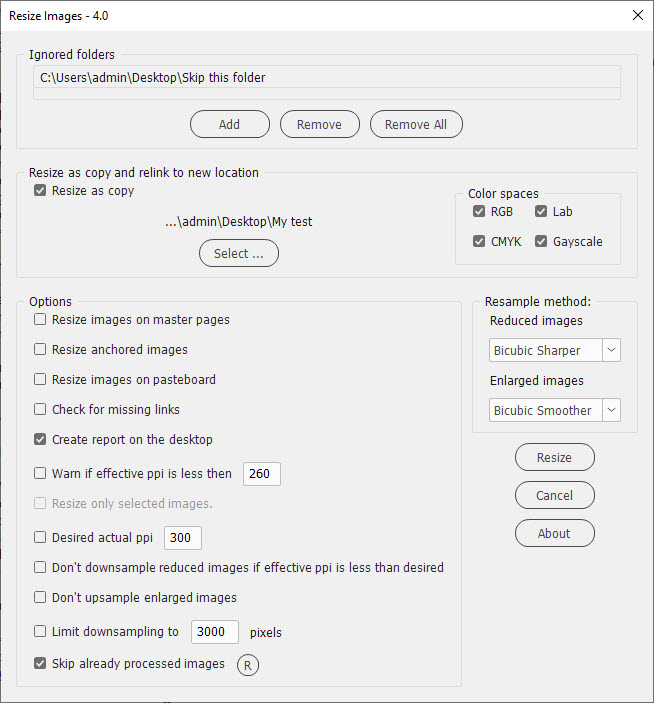

Resize images

Script for InDesign and Photoshop — version 4.0.
Written and tested in versions 2024 and 2026 on Windows.
I could'n test it on my Mac because BridgeTalk — the feature used to comunicate between Adobe apps — doesn't work there.
This script esizes all raster images in the current InDesign document and, if possible, sets them to 100%.
Currently supported image formats:
- TIF
- PSD
- JPEG
- PNG
- ScitexCT
- PC PaintBrush
- CompuServe GIF
- Windows Bitmap
- WEBP
- HEIC

If you have any feedback — complaints, comments, or suggestions — feel free to send me an e-mail putting Resize images into the subject line. (Warning: unfortunately, I can’t reply to all the e-mails I get because of lack of time. Sorry in advance!)
If you found this script useful and want me to develop it further, consider supporting me by donating via PayPal directly to my e-mail: askoldich [at] yahoo [dot] com (Due to PayPal’s restrictions for Ukraine, I can’t have a Donate button on my site.)
Click here to download the current version of the script.